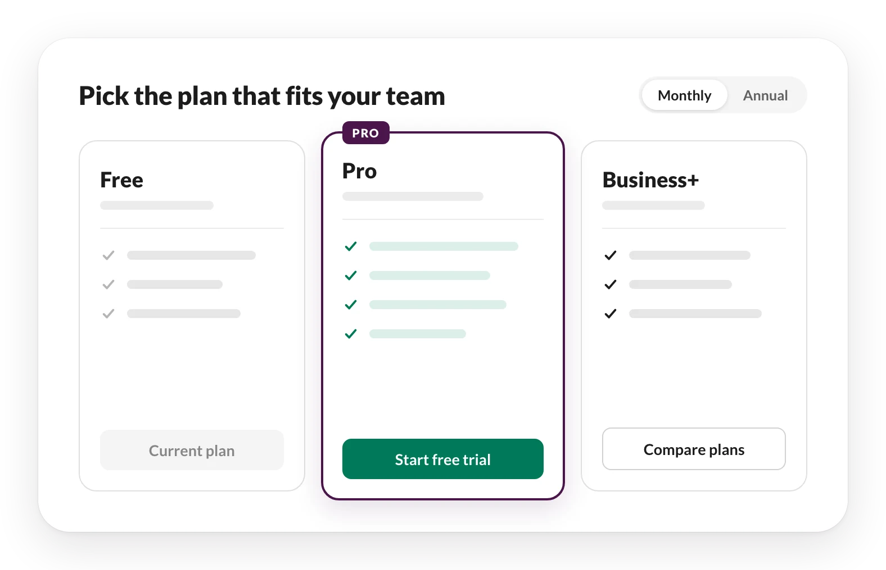

Pricing & Packaging
Running the design side of Slack’s plan changes — so every product team updating its own upgrade moments shipped one consistent experience.


Project at a glance
A plan change touches everything
Slack repackaged its self-serve plans so each tier had a clearer reason to pay for it. Deciding what went into each plan was a business call. The design problem was everything downstream of it.
Every paywall, trial, banner, email and plans page that described a plan had to change at once — and those surfaces belonged to product teams across the company, each shipping on its own schedule.
One hub, many spokes
The program ran hub and spoke. Expansion, the Growth team that owns upgrades, built the foundation. Every product pillar updated the entry points inside its own features.
As a design DRI in the hub, my job was less about drawing screens and more about making sure every pillar’s screens added up to one experience.
-
01
Teams in parallel
Each pillar updated its own upgrade moments at the same time — and was tempted to build its own version of each.
-
02
Copy in the code
Plan names and limits sat in strings across the client, in places no design file covered.
-
03
States on states
The same screen had to read right during a trial, with a promo, or with credit on the account.
Making consistency the easy path
Reviewing every pillar’s work one screen at a time wasn’t going to scale. So most of my work went into making the consistent choice the default one.
One component, not ten copies
I pointed every pillar to the Upgrades Kit — our shared upgrade components — and wrote down when to use what. A change made once in the kit reached every surface that used it, instead of every team patching its own version.
- A button says Try Pro, or carries a Pro badge It opens the shared trial modal. Expansion updates the design once; each pillar QAs it in place.
- The component you need doesn’t exist yet Ask Expansion before building it, so it gets built once, in the kit.
- A feature needs a banner One placement in every browser view — below search, scrolling with the page — instead of a different spot per feature.
Sweeping the strings
Figma files only cover what someone remembered to design. Engineering ran a code sweep for every string that touched a plan, and nearly 800 came back. I split them by pillar and gave each team three options:
- Retired The string, and the experience it lives in, is deprecated.
- Covered New design and copy are already in the team’s Figma deliverables.
- Rewrite The team drafts new copy, content design and I review it, then it goes to engineering.
Designing for every state
An upgrade message rarely shows up alone. I mapped the layers that stack on top of the base message, so pillars designed for them up front, not in QA.
-
During a trial
The team is trying a paid plan.
-
Mid-trial at launch
Plans change while the trial is still running.
-
With a promo
A discount is attached to the upgrade.
-
With credit
The team already has credit on its account.
From “end to end” to work packages
When the plan changed shape for a second round, I co-led design for it. “End to end” was too vague to staff or schedule, so the program broke it into work packages — each with one goal, one team, and one question: is this ready to bring to engineering?
- Not yet Don’t bring it to the team.
- Early A kickoff is possible, but expect to kick it off again.
- Bring it Log the big open questions and work through them together.
- Ready Schedule the kickoff.
The packages I owned
Trials — the moment a team decides whether a paid plan is worth it.
- Pro trial The updated self-serve trial, including the entry points that lead into it.
- Business+ trial A new self-serve trial, so teams could try the top plan before buying it.
- Trial emails Updated with lifecycle marketing so the inbox matched the product.
- Invoice trials Discovery with Sales for teams that pay by invoice rather than card.
- ~800 Plan strings swept, split by pillar and triaged to retire, keep or rewrite
- 1 Shared trial modal behind every Try Pro button, changed once in the Upgrades Kit
- ~12 Places to buy the AI add-on, mapped so all of them came out when it was retired
What I took from it
On a program this wide, design quality is mostly an operations problem. The screens were rarely the hard part. Keeping every team’s screens telling the same story was.
One principle we wrote for the second round says it well: upgrade paths are education, too. No one wants to feel tricked into paying. They want to feel like they made a smart, informed decision.
At this scale, consistency doesn’t come from reviewing every screen. It comes from making the right choice the default.